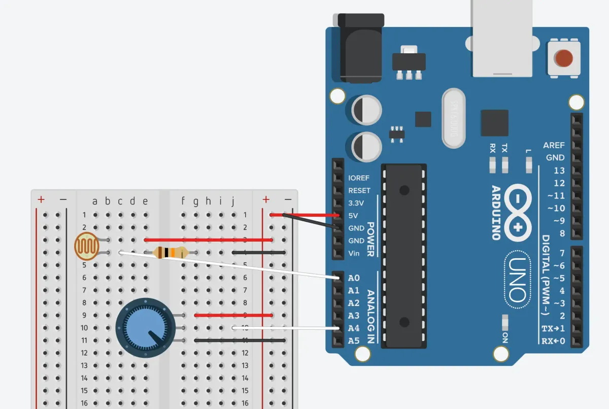

Functions
Assignment description
DO NOT USE ChatGPT or any other AI to write code for this assignment .
For this assignment you will write two (2) functions:
Function 1. Takes a pin number as an argument and return a sensor reading as an Int mapped from 1-100
Function 2. Takes an Int and uses it to fade or blinks an LED
Function 1
Source files: Function 1
Documentation: Function 1
Top down view of breadboard and Arduino

Circuit view

Schematic drawing

Code: Function 1
// Inputs
const int SENSOR_LIGHT = A0;
const int SENSOR_POT = A4;
// Run
void setup() {
Serial.begin(9600);
}
void loop() {
sensor(SENSOR_LIGHT);
sensor(SENSOR_POT);
}
// === Functions ===
// Function 1. Takes a pin number as an argument and return a sensor reading as an Int mapped from 1-100
int sensor(int _sensor) {
// Variables
int sensorRaw;
int sensorMapped;
// Get reading, map result to 1-100
sensorRaw = analogRead(_sensor);
sensorMapped = sensorRaw/10.23;
return sensor;
}
Function 2
Source files: Function 2
Documentation: Function 2
Top down view of breadboard and Arduino

Circuit view
Schematic drawing
Trying to figure out how the timing was going to work
Code: Function 2
// Outputs
const int LED_GREEN = 12;
const int LED_YELLOW = 8;
// Run
void setup() {
Serial.begin(9600);
pinMode(LED_GREEN, OUTPUT);
pinMode(LED_YELLOW, OUTPUT);
}
void loop() {
blinker(LED_GREEN, 2000, 1000);
blinker(LED_YELLOW, 500, 500);
}
// Function 2. Takes an Int and uses it to fade or blink an LED
void blinker(int _led, int _onTime, int _offTime) {
// Set up initial values that persists (static) with extended sizes (long) and doesn't change to a neg number (unsigned)
static unsigned long timerStart = 0;
static unsigned long timeElapsed = 0;
// Set up variables
unsigned long timer = timerStart + timeElapsed;
unsigned long time = millis();
// When time elapsed minus timer is greater or equal to time light should be on, turn light off
// first run-through: when time elapses past onTime then turn LED off, timer will be 0
// second run-through: timer should now be what time was before, 2.01 seconds, next trigger should be at 4 seconds
if (time - timer >= _onTime) {
digitalWrite(_led, LOW);
// Reset timer only when the light has been off long enough
if (time == timer + _onTime + _offTime) {
timeElapsed = millis();
Serial.println(timer);
}
// Light is on all other times
} else {
digitalWrite(_led, HIGH);
}
}
Process & Learnings
- Blinker
- To get a sense for what should happen when, I built a spreadsheet. I found this much easier to track and quicker to iterate the initial draft than it was to look at the Serial output.
- The code for the blinker works for one LED but I couldn't reconcile both LEDs working at the same time. When I extracted the code back into the loop, duplicated one for each LED, and assigned a unique global timer variable, then the LEDs blinked correctly.
- New programming terms
- When it comes to capturing time, the count can climb quickly. Using both long (for long storage) and unsigned (to keep the number in the positive) prevented the build from breaking.
- unsigned int
- long
- static